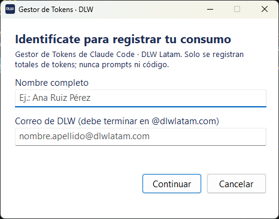
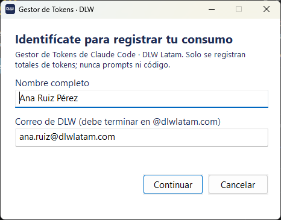
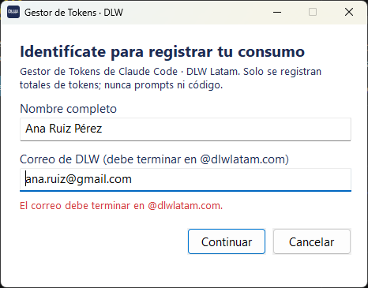
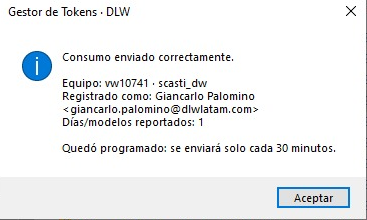

Guía para instalar GestorTokens.exe y registrar el consumo de la cuenta compartida de Claude Code de Delaware.
GestorTokens.exe mide cuánto usa cada persona la cuenta compartida de Claude Code, para que el equipo cuide la cuota disponible. Se instala una sola vez y luego trabaja solo, en segundo plano.
%LOCALAPPDATA%\GestorTokens). Si Windows llegara a pedirte una contraseña de administrador, cancela y escribe a soporte.Descarga desde el SharePoint › doble clic › nombre y correo @dlwlatam.com › mensaje «Consumo enviado correctamente».
Instálalo en cada máquina donde uses Claude Code con la cuenta compartida: tu laptop Delaware, la máquina virtual de Luz del Sur, o ambas. El procedimiento es el mismo en las dos.
Si en alguna de tus máquinas usas Claude Code con una cuenta personal, ese uso no se registra. Puedes dejar el programa instalado: empezará a medir cuando esa máquina use la cuenta compartida.
Sigue los pasos en orden. Todo el proceso toma unos 2 minutos.
En la máquina donde lo vas a instalar (laptop Delaware o VM Luz del Sur), abre el siguiente enlace y descarga el archivo:
↓Guárdalo en una carpeta fácil de ubicar, por ejemplo Descargas.
Clic derecho sobre el archivo › Propiedades › pestaña Detalles. Debe indicar Gestor de Tokens · DLW Latam, versión 2.3.0.
Haz doble clic en GestorTokens.exe. No es necesario usar «Ejecutar como administrador».
Es normal la primera vez, porque se trata de un programa interno de DLW Latam:
No intentes forzarlo. Escribe a soporte (sección 06) indicando en qué máquina ocurrió.
Se abre la ventana «Gestor de Tokens · DLW». Solo aparece la primera vez en cada máquina.



Aparece si escribes un correo personal (Gmail, Hotmail) o del cliente. Corrige el correo y pulsa Continuar.
Para que tu consumo quede a tu nombre automáticamente, en todas tus máquinas.
Si cierras o cancelas la ventana, no se instala nada.
Al terminar verás este mensaje. Si lo ves, la instalación está completa.

Pulsa Aceptar. Puedes borrar el archivo descargado: el programa ya quedó copiado en tu carpeta de usuario.
Tu Claude Code está usando otra cuenta, por ejemplo una personal. Conéctalo con la cuenta compartida de Delaware y vuelve a abrir GestorTokens.exe.
| Situación | Qué hacer |
|---|---|
| No acepta mi correo | Debe terminar exactamente en @dlwlatam.com. No se aceptan correos personales ni del cliente. |
| Me equivoqué en mi nombre o correo | Escribe a soporte indicando tu nombre y correo correctos. |
| ¿Tengo que abrirlo todos los días? | No. Envía el consumo solo cada 30 minutos mientras tu sesión de Windows está abierta. |
| Uso Claude Code personal y el de Delaware en la misma máquina | Solo se registra el uso de la cuenta compartida de Delaware. |
| Aparece «No se pudo enviar el consumo» | Revisa tu conexión a internet y vuelve a abrir el programa. Si persiste, escribe a soporte. |
| Windows o el antivirus lo bloquean | No intentes forzarlo. Escribe a soporte. |
| Trabajo en mi laptop y en la VM | Instálalo en ambas con el mismo correo. El panel suma las dos a tu nombre. |
| Me cambiaron de VM o de laptop | Repite la instalación en la máquina nueva con el mismo correo; se suma a tu nombre automáticamente. |
Ante cualquier duda o problema con la instalación, comunícate con: